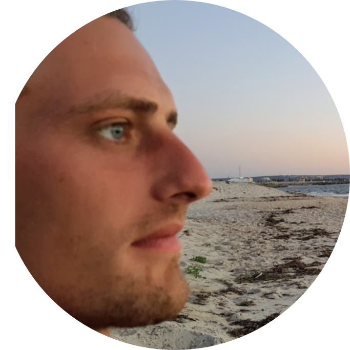

Dee Blakeman
From UK, 33 years old. I have a strong passion for all things technological,
I hope to one day become a certified Fullstack Web Dev. I have also travelled to
Australia and New Zealand, worked and lived as a national in each of these countries. Pellentesque habitant morbi tristique senectus et netus et malesuada fames ac turpis egestas. Vestibulum tortor quam, feugiat vitae, ultricies eget, tempor
sit amet, ante. Donec eu libero sit amet quam egestas semper. Aenean ultricies mi vitae est. Mauris placerat eleifend leo. Quisque sit amet est et sapien ullamcorper pharetra. Vestibulum erat wisi, condimentum sed, commodo vitae, ornare sit
amet, wisi. Aenean fermentum, elit eget tincidunt condimentum, eros ipsum rutrum orci, sagittis tempus lacus enim ac dui. Donec non enim in turpis pulvinar facilisis. Ut felis. Praesent dapibus, neque id cursus faucibus, tortor neque egestas
augue, eu vulputate magna eros eu erat. Aliquam erat volutpat. Nam dui mi, tincidunt quis, accumsan porttitor, facilisis luctus, metus

Skills Bio
My programming skills are very basic, I attended college when I was
27 years old, attaining full marks (D*D*D*). I have also completed
uncertified online challenges in web design. I have also dabbled with C++, C# plus other languages. Unfortunately a MASTER of none.

HTML & CSS
Have a good working knowledge of both HTML and CSS.
JavaScript
Have a basic knowledge, currently self teaching to understand the
language and concepts.
BackEnd Web Dev
Am also working towards understanding mongoDB, Python, Git. etc.